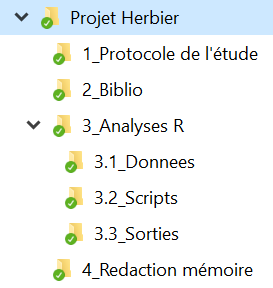

Quelques conseils avant de partir tête baissée dans le monde merveilleux de R.
Exemple d’organisation de ses fichiers pour inspiration :

Pour chaque nouveau script, choisir un nom explicite et indiquer la date de création du fichier dans le nom :
20210707_Import_donnees_brute.R
20210708_Corrections_donnes.R
20210710_Creations_variables_analyse1.R
20210711_Analyse1.R
20210713_Analyse1_V2.R
20210713_Creations_variables_analyse2.R
20210717_Analyse2.RDans chaque script R que vous rédigez :
- dans l’en-tête du script, indiquer la date de création du fichier, l’auteur.e, et l’objet du script
- dans votre code, commentez le déroulé de votre script (on oublie en moins de 2 jours)
################################################################
# Auteur.e : Pocahontas
# Date : 20 ajout 2021
# Projet : Stage M2 Herbier
# Objet : préparation des données pour l'analyse
################################################################
#Import des librairies ----
library(tidyverse)
library(readxl)
#Import des données
donnees <- read_excel("C:/User/Documents/releve_floristique_20200808.xlxs",sheet = "Feuil1")
#Manipulation de données
donnees <- donnees %>% select(id,espece,gps,date,observateur)
...Astuce : Si votre script est long, vous pouvez générer une table des matières pour mieux naviguer dans le script (cliquer sur “show document outline” en haut à droite). Pour déclarer un titre, on ajoute 4 tirets du 6 (-) à la fin du commentaire.
# Titre 1 Import des librairies ----
# Titre 2 Correction des données ----
# Titre 3 Création de variables ----Lorsque vous analysez des données dans un fichier Excel, l’idéal est d’écrire l’ensemble des opérations effectuées sur vos données dans un ou des scripts (corrections de valeurs dans le fichier, recodage des données manquantes, création et modification de colonne, fonctions utilisées pour vos analyses). Dit autrement, on travaille à partir du fichier Excel des données brutes qui ne doit JAMAIS être modifié à la main, autrement on perd la traçabilité des modifications effectuées. L’idée c’est d’être toujours capable de reproduire ses résultats (figures, tableaux, analyses) pour pouvoir les vérifier, les réutiliser ou les partager. Le fichier Excel des données brutes associé à vos scripts doivent nous permettre de retrouver vos résultats à tout moment.
Pour faciliter le travail dans R de lecture de vos données dans Excel, quelques recommandations :
- des noms de colonnes courts, éviter les espaces et caractères spéciaux (les accents en particulier)
- mettre une seule information par colonne
- mettre une seule observation par ligne - si vous avez plusieurs niveaux d’informations, faire deux onglets (ex : un onglet pour les caractéristiques de vos relevés floristiques, un onglet pour les caractéristiques des parcelles) - éviter de mixer du texte et des chiffres dans une même colonne
- évitez les couleurs, elles ne seront pas lues dans R
- vous pouvez ajouter un onglet “Informations” ou “A LIRE” dans votre fichier Excel pour donner des informations complémentaires pour la bonne compréhension de vos données
- éviter les cellules fusionnées
Pour exécuter le code R, un raccourci très pratique
- sous Windows & Linux : Ctrl+Enter
- sous Mac : Cmd+Return